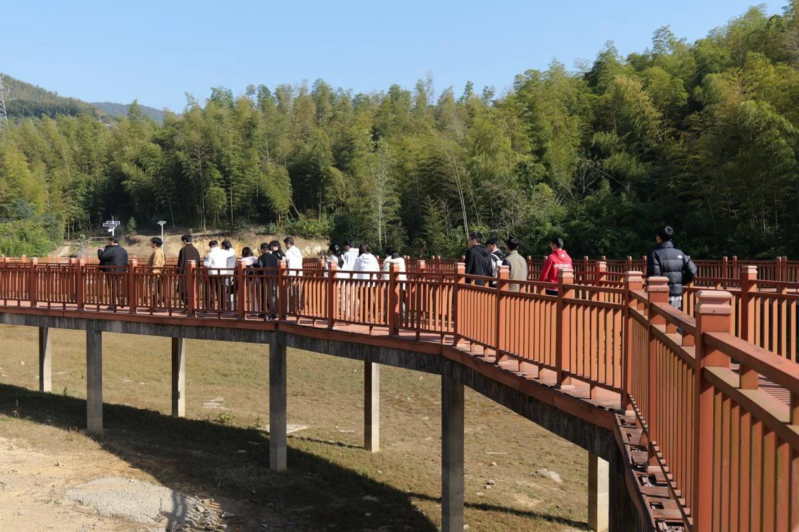
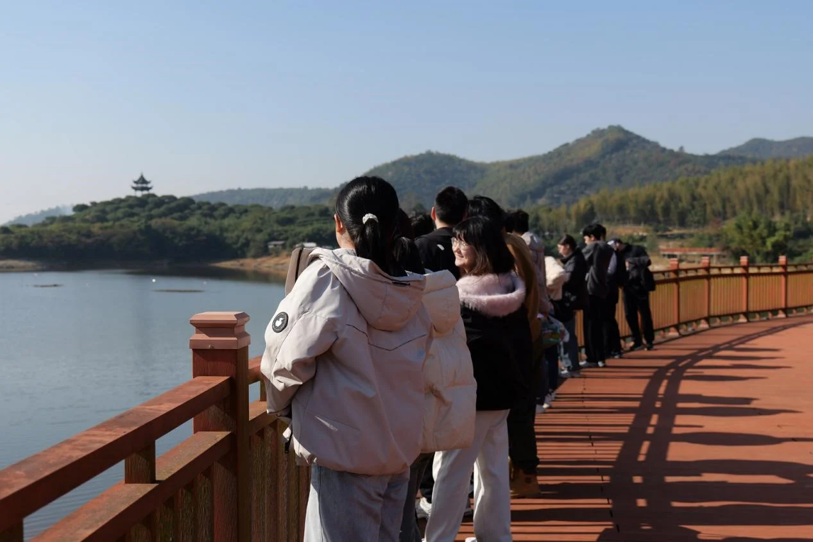
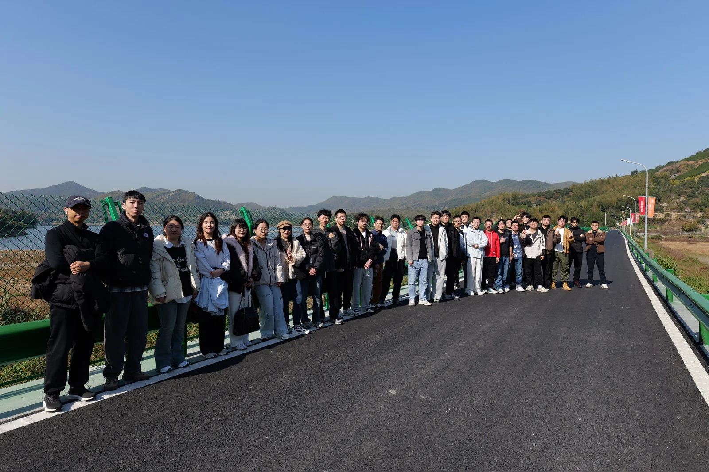
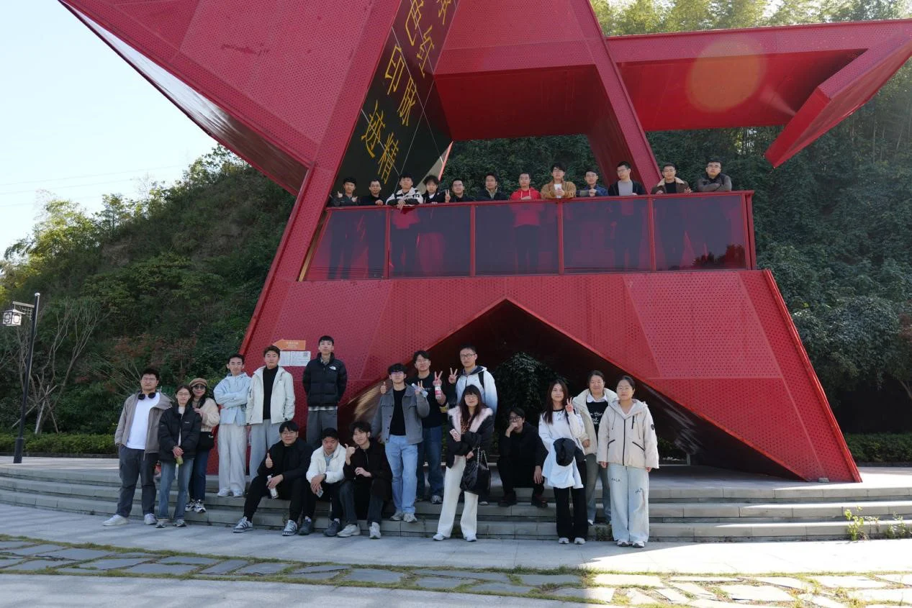
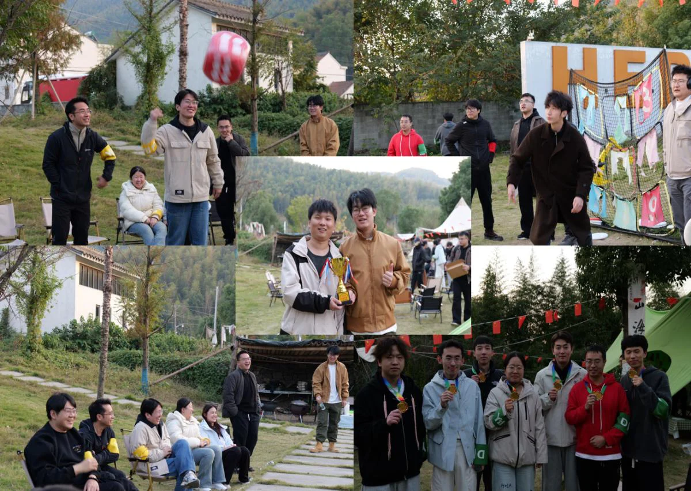

11月26日，IMED团队在宁波市江北区慈城五联村成功举办了以“秋行逸趣，一路变‘豪’”为主题的秋季团建活动。本次活动共有30名成员参与，通过上午的绿道漫步、中午的露营午餐与下午的营地大富翁游戏，大家在轻松愉快的氛围中增进了团队凝聚力，提升了协作精神，共同度过了一个充满欢声笑语的秋日。
上午场：沿云湖绿道漫步，拥抱自然，凝聚团队
上午的活动以沿云湖绿道散步打卡为主。团队选择这条非机动车道的湖边栈道，旨在让成员们在宁静的自然环境中放松身心，同时通过集体步行促进非正式交流，增强团队默契。绿道沿途风景如画，湖水碧波荡漾，栈道蜿蜒其间，为大家提供了绝佳的拍照打卡机会。同学们三五成群，边走边聊，有的驻足欣赏湖光山色，有的用镜头记录美好瞬间，整体氛围轻松愉悦。这种户外漫步不仅锻炼了身体，还拉近了彼此距离，为后续的团队协作奠定了良好基础。


中午：露营基地午餐，融合户外与室内乐趣
中午，团队移步至露营基地，享受了一场别具特色的午餐露营。选择露营方式，是为了营造一种亲近自然、自由交流的氛围，让成员们在户外搭建的帐篷和天幕下，感受“家”的温馨与团队的温暖。营地环境优美，空气清新，大家分工合作，共同布置就餐区域，增强了动手能力和团队协作。同时，基地还配备了室内娱乐设施，如麻将和桌游，为成员们提供了多样化的休闲选择。就餐环节中，大家围坐一起，分享美食与故事，笑声不断，进一步加深了情感联系。
 
下午场：营地大富翁游戏，激发团队竞争与合作
下午的活动是本次团建的重头戏——线下“大赢家”游戏。设计这一环节的目的是通过趣味性强的团队游戏，强化成员间的沟通、策略协作与正向竞争精神。游戏参考大富翁框架，使用不同颜色的塑料垫作为功能格子，30名成员分为四支队伍，通过掷骰子触发各种任务和挑战。
整个流程中，队伍需通过完成分支团建游戏赚取虚拟资金，并用这些资金升级装备，提升在主线游戏中的竞争力。升级后的装备帮助队伍积累更多金币，最终通过租金和策略争夺胜利。游戏材料简单实用，却充分调动了大家的创意与参与热情。活动现场气氛热烈，各队成员积极讨论战术，互相鼓励，在游戏中体验了从计划到执行的全过程，增强了团队解决问题的能力。

活动总结：收获满满，团队精神再升华
本次秋季团建在欢声笑语中圆满落幕。通过全天活动，IMED团队成员不仅享受了秋日美景与休闲乐趣，更在协作与竞争中深化了彼此信任，提升了团队凝聚力。活动强调了“逸趣”与“变‘豪’”的主题——在轻松中寻找乐趣，在挑战中共同成长。大家纷纷表示，这次经历让他们更加融入团队，未来将以更饱满的热情投入工作，共创佳绩。
整场活动体现了IMED团队对成员福祉的重视，以及对团队文化建设的不懈追求。秋行逸趣，一路变“豪”，我们期待未来更多这样的精彩时刻，继续书写团队合作的新篇章。